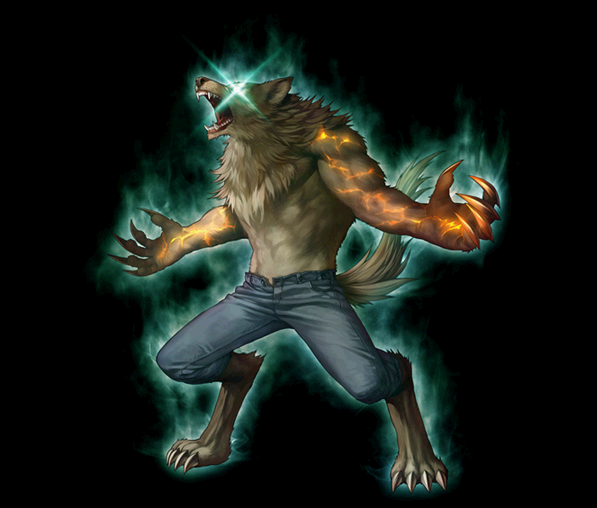
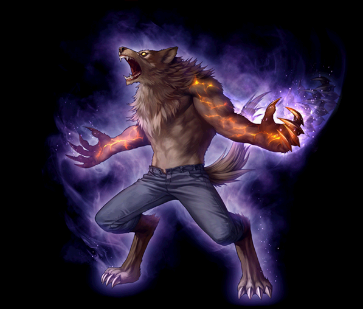

2018.05～ ウルフマン 覚醒スキル一覧
2018/05/29 ウルフマンスキル改変後のデータ。
2020/02/19 状態異常に伴うスキル改変前のデータ。
改変後は、2020/02/19バランスパッチ反映版を参考にしてください。
ブラッディバーサーカー
フレイムバーサーカー
ルナティックバーサーカー
ブラッディバーサーカー

| [専用覚醒スキル] ヴァンパイアクロー | ||||||||
|---|---|---|---|---|---|---|---|---|
| スキル難易度 | 4 | |||||||
| 必要スキル | チェーンドクロー [50] |
|||||||
| スキル説明 | 敵に素早い動きで連続攻撃を行い、敵が出血状態の場合、さらに攻撃力が増加。 | |||||||
| レベル | 0 | 1 | 2 | 3 | 4 | 5 | ... | 50 |
| 消費CP | 250 | 253.5 | 257 | 260.5 | 264 | 267.5 | ... | 425 |
| 獲得CP | 150 | 153 | 156 | 159 | 162 | 165 | ... | 300 |
| ◆物理ダメージ | 175% | 178.5% | 182% | 185.5% | 189% | 192.5% | ... | 350% |
| 追加攻撃力 | 17.5% | |||||||
| 攻撃速度(秒) | 2 | |||||||
| 攻撃回数(Max 7回) | 7 | |||||||
| 備考 | 回避率-3％固定は削除され、敵の攻撃無視が追加。 | |||||||
| 備考 | 追加攻撃力は出血状態の敵に使用したときにのみ適用される | |||||||
| 備考 | 力の数値によって限界ダメージ増加 | |||||||
| 備考 | 同時多段攻撃になりました。 | |||||||
| ヴァンパイアファング | ||||||||
|---|---|---|---|---|---|---|---|---|
| スキル難易度 | 1 | |||||||
| 必要スキル | ウルフファング [50] |
|||||||
| スキル説明 | 顎で敵を噛みちぎる。出血状態の敵を攻撃する場合、敵の物理攻撃力と魔法攻撃力を低下させる。 | |||||||
| レベル | 0 | 1 | 2 | 3 | 4 | 5 | ... | 50 |
| 消費CP | 0 | |||||||
| 獲得CP | 30 | 30.6 | 31.2 | 31.8 | 32.4 | 33 | ... | 60 |
| ◆物理ダメージ | 75% | 76.5% | 78% | 79.5% | 82% | 83.5% | ... | 150% |
| 命中率補正値 | 5% | 5.1% | 5.2% | 5.3% | 5.4% | 5.5% | ... | 10% |
| クリティカル抵抗低下 | 10% | |||||||
| 攻撃力低下量 | 20% | |||||||
| 命中率低下量 | 10%？(ゲーム内で存在) | |||||||
| 持続時間 | 10秒 | |||||||
| 備考 | 出血状態の敵に、使用したスキル最終ダメージの50％を2秒間隔で3回追加で与える。 | |||||||
| ブラッディビーストベルセルク | ||||||||
|---|---|---|---|---|---|---|---|---|
| スキル難易度 | 5 | |||||||
| 必要スキル | ビーストベルセルク [50] |
|||||||
| スキル説明 | 野獣の本能を呼び覚まし、攻撃力と火属性攻撃力、速度、体力が上昇。全ての攻撃に出血効果が追加され、出血状態にかかった敵を攻撃する場合、防御力が一定時間上昇。 | |||||||
| レベル | 0 | 1 | 2 | 3 | 4 | 5 | ... | 50 |
| 消費CP | 520 | 528 | 536 | 544 | 552 | 560 | ... | 920 |
| 獲得CP | 500 | 510 | 520 | 530 | 540 | 550 | ... | 1000 |
| 物理ダメージ増加量 | 200% | 204% | 208% | 212% | 216% | 220% | ... | 400% |
| 攻撃速度 | 20% | 20.2% | 20.4% | 20.6% | 20.8% | 21% | ... | 30% |
| 移動速度 | 30% | 30.2% | 30.4% | 30.6% | 30.8% | 31% | ... | 40% |
| 命中率補正値 | 10% | 10.2% | 10.4% | 10.6% | 10.8% | 11% | ... | 20% |
| 持続時間(秒) | 280 | 285 | 290 | 295 | 300 | 305 | ... | 530 |
| 防御力増加 | 50 | 50.4 | 50.8 | 51.2 | 51.6 | 52 | ... | 75 |
| 火属性攻撃力強化 | 10% | 10.5% | 11% | 11.5% | 12% | 12.5% | ... | 35% |
| 出血ダメージ量 | 100% | 102% | 104% | 106% | 108% | 110% | ... | 200% |
| 出血持続時間 | 6秒(1秒に1度) | |||||||
フレイムバーサーカー
| フレイムバーサーカー | |||||||
|---|---|---|---|---|---|---|---|
|  | |||||||
| [専用パッシブ] 灼熱の心臓 | |||||||
| スキル説明 |
心臓から燃え上がる灼熱の魔力で、攻撃している敵の火属性抵抗を弱体化させる。 |
||||||
| スキル効果 |
- ターゲットの火属性抵抗力40％減少 |
||||||
| [専用覚醒スキル] バーニングフレイム | ||||||||
|---|---|---|---|---|---|---|---|---|
| スキル難易度 | 3 | |||||||
| 必要スキル | バーニングオーブ [50] |
|||||||
| スキル説明 | 全身に炎を纏い、体を回転して炎のボールを作り出して敵に飛ばす。炎のボールはゆっくりと進んで、敵とその周辺にダメージを与える。 | |||||||
| レベル | 0 | 1 | 2 | 3 | 4 | 5 | ... | 50 |
| 消費CP | 140 | 142 | 144 | 146 | 148 | 150 | ... | 240 |
| 獲得CP | 125 | 127.5 | 130 | 132.5 | 135 | 137.5 | ... | 250 |
| ◆炎ダメージ | 360〜400 | 364〜404 | 368〜408 | 372〜412 | 376〜416 | 380〜420 | ... | 560～600 |
| 射程距離(m) | 5 | |||||||
| 射程距離(m) | 5 | |||||||
| 爆発周期(秒) | 0.2 | |||||||
| 爆発範囲(m) | 3 | |||||||
| クールタイム(秒) | 2 | |||||||
| 攻撃回数 | 1発当たり2回 | |||||||
| フルムーンオーバーフロー | ||||||||
|---|---|---|---|---|---|---|---|---|
| スキル難易度 | 2 | |||||||
| 必要スキル | フルムーン [50] |
|||||||
| スキル説明 | スキルを使用するとウルフマンからダメージを受けた敵の移動速度と攻撃速度を一定時間減少させる。 | |||||||
| レベル | 0 | 1 | 2 | 3 | 4 | 5 | ... | 50 |
| 消費CP | 0 | |||||||
| 獲得CP | 0 | |||||||
| 敵の移動速度が低下確率 | 90% | |||||||
| 敵の移動速度低下率 | 30% | |||||||
| 敵の攻撃速度低下確率 | 90% | |||||||
| 敵の攻撃速度低下率 | 30% | |||||||
| 効果持続時間 | 7秒 | |||||||
| 限界レベル | モンスターのレベルが(キャラクターレベル+スキルレベル)以下敵のみ対象 | |||||||
| 備考 | 攻撃速度低下は覚醒スキルのみ適用 | |||||||
| 備考 | アクティブスキル、100%の確率で1秒間移動不可 | |||||||
| ハウリングエルプション | ||||||||
|---|---|---|---|---|---|---|---|---|
| スキル難易度 | 5 | |||||||
| 必要スキル | ハウリングブラスト [50] |
|||||||
| スキル説明 | 狼の咆哮で魔法力場を生み出し、自分の周囲に大爆発を起こす。従来より威力と範囲が増加。 | |||||||
| レベル | 0 | 1 | 2 | 3 | 4 | 5 | ... | 50 |
| 消費CP | 280 | 283 | 286 | 289 | 292 | 295 | ... | 430 |
| 獲得CP | 50 | 51 | 52 | 53 | 54 | 55 | ... | 100 |
| ◆炎ダメージ | 220〜280 | 223〜283 | 226〜286 | 229〜289 | 232〜292 | 235〜295 | ... | 370～430 |
| 爆発範囲半径(m) | 5.1 | 5.12 | 5.14 | 5.16 | 5.18 | 5.2 | ... | 6 |
| 備考 | 段階別ダメージ適用[60%～150%](30%刻み) | |||||||
| 備考 | ハウリングブラストの範囲は2012年ごろに1度下方修正が入っています。 | |||||||
ルナティックバーサーカー
| ルナティックバーサーカー | |||||||
|---|---|---|---|---|---|---|---|
|  | |||||||
| [専用パッシブ] 月輪の呪縛 | |||||||
| スキル説明 |
すべてのスキルのクリティカル確率上昇 |
||||||
| スキル効果 |
すべてのスキルの致命打率25%増加 敵のクリティカル抵抗15%減少 |
||||||
 |
[専用覚醒スキル] リバウンディングリニア | |||||||
|---|---|---|---|---|---|---|---|---|
| スキル難易度 | 4 | |||||||
| 必要スキル | バウンシングリニア [50] |
|||||||
| スキル説明 | 敵に突進して攻撃し、敵にぶつかると次の敵に反射する。一定時間、回避率が増加。 | |||||||
| レベル | 0 | 1 | 2 | 3 | 4 | 5 | ... | 50 |
| 消費CP | 330 | 335 | 340 | 345 | 350 | 355 | ... | 580 |
| 獲得CP | 200 | 204 | 208 | 212 | 216 | 220 | ... | 400 |
| ◆物理ダメージ | 250% | 254% | 258% | 262% | 266% | 270% | ... | 450% |
| 命中率補正値 | 10% | 10.2% | 10.4% | 10.6% | 10.8% | 11% | ... | 20% |
| 反射回数(Max 12回) | 12 | 12 | 12 | 12 | 12 | 12 | ... | 12 |
| 回避率補正値 | 15% | 15.2% | 15.4% | 15.6% | 15.8% | 16% | ... | 25% |
| 最大射程距離(m) | 6 | |||||||
| 持続時間(秒) | 15 | |||||||
| 備考 | 命中した敵に体力比例ダメージ100%を3回適用 | |||||||
| ルナティックロアー | ||||||||
|---|---|---|---|---|---|---|---|---|
| スキル難易度 | 4 | |||||||
| 必要スキル | ルナティックハウリング [50]
|
|||||||
| スキル説明 | 敵を狂わせて誰にでも攻撃させる狼の咆哮。一定確率でスタン状態になる。叫んでいる間はずっと有効。 | |||||||
| レベル | 0 | 1 | 2 | 3 | 4 | 5 | ... | 50 |
| 消費CP | 0 | |||||||
| 獲得CP | 30 | 30.4 | 30.8 | 31.2 | 31.6 | 32 | ... | 50 |
| 混乱確率 | 90% | |||||||
| スタン確率 | 90% | |||||||
| 有効半径(m) | 3.5m | |||||||
| 敵混乱持続時間 | 5秒 | |||||||
| 敵スタン持続時間 | 1.5秒 | |||||||
| 発動周期 | 10秒 | |||||||
| エンミティグローリング | ||||||||
|---|---|---|---|---|---|---|---|---|
| スキル難易度 | 3 | |||||||
| 必要スキル | ヘイトリドグローリング [50]
|
|||||||
| スキル説明 | 小さな鳴き声で敵を戦意喪失させて、攻撃力と命中率を低下させる。一定CPを消耗し、バウンシングリニア(リバウンディングリニア)の攻撃力を大幅増加させる。吠えている間はずっと有効。 | |||||||
| レベル | 0 | 1 | 2 | 3 | 4 | 5 | ... | 50 |
| 7秒毎の消費CP | 30 | 30.2 | 30.4 | 30.6 | 30.8 | 31 | ... | 40 |
| 敵の攻撃力低下率 | 50% | 50.8% | 51.6% | 52.4% | 53% | 54% | … | 90% |
| 敵命中率低下率 | 25% | 25.4% | 25.8% | 26.2% | 26.6% | 27% | … | 45% |
| 有効半径(m) | 6 | |||||||
| 敵の低下確率 | 7秒ごとに50％ | |||||||
| 敵の低下時間 | 5秒 | |||||||
| 攻撃力増加率 | 7秒ごとに+ 50％ | |||||||